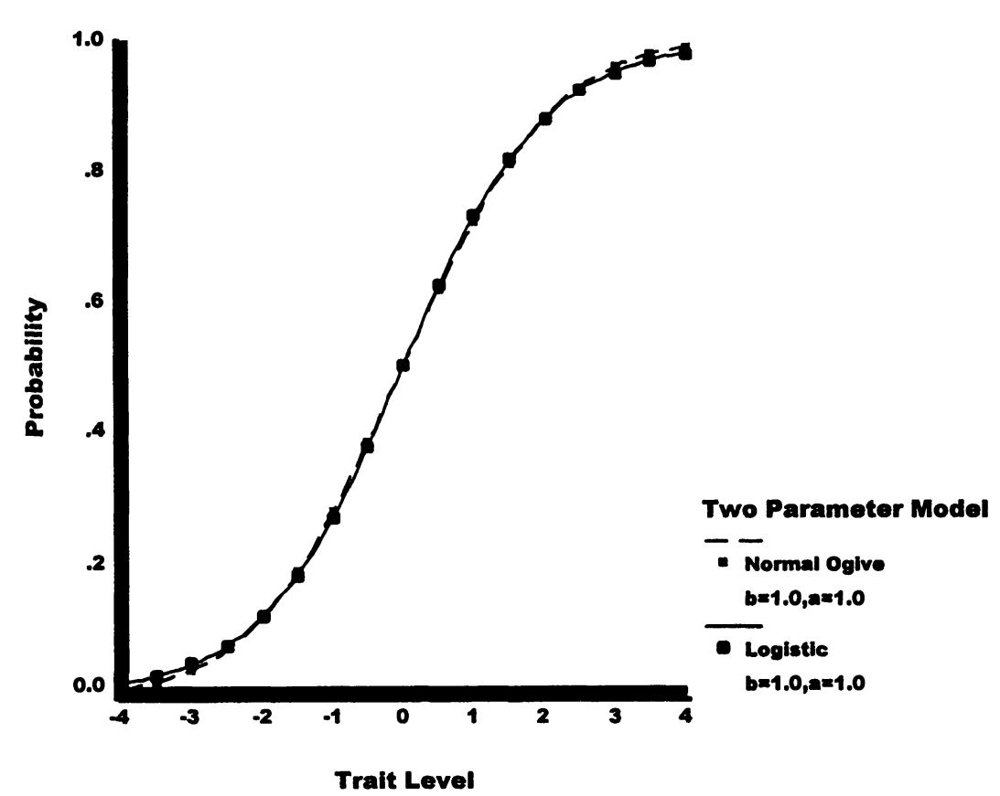

3. 传统正态Ogive模型¶
3.1为什么需要正态Ogive模型？¶
正态ogive模型包含与相应逻辑模型相同的参数，但项目特征曲线由不同函数产生。
历史背景：
- 基于累积正态分布
- 在计算机时代之前更容易理解
- 与经典测验理论有重要联系
为什么叫"Ogive"？
Ogive是累积曲线的另一个名称，形状像拉长的S，在统计学中常用来描述累积分布函数。
3.2 形式¶
正态ogive模型将ICC表示为低于某个标准分数 \(z_{is}\) 的案例比例：
其中：
- 积分符号表示从 \(-\infty\) 到 \(z_{is}\) 的分布区域
- \(\pi\) = 常数3.14159...
- 公式包含正态密度函数
通俗理解：
这就是在问："标准正态分布中，有多少比例的值小于 \(z_{is}\)？"
如果 \(z_{is} = 0\)，答案是50% 如果 \(z_{is} = 1\)，答案约是84% 如果 \(z_{is} = -1\)，答案约是16%
3.3 两参数正态Ogive模型¶
3.3.1 参数结构¶
两参数正态ogive模型具有与2PL模型相同的参数结构：
完整模型：
3.3.2 计算示例¶
例1： 如果 \(\alpha_i = 1.0\)，\(\theta_s = 2.00\)，\(\beta_i = 1.00\)
计算步骤：
- \(z_{is} = 1.0 \times (2.00 - 1.00) = 1.00\)
- 查正态分布表：\(\Phi(1.00) = 0.8413\)
- 因此，项目成功概率为0.8413
实际意义： 能力比难度高1个标准差的学生，有84%的概率答对！
例2： 如果参数组合产生 \(z_{is} = -1.50\)
从累积正态分布得到的概率为0.0668
实际意义： 能力比难度低1.5个标准差的学生，只有6.7%的概率答对。
3.3.3 与经典测验理论的联系¶
重要关系
如果特质水平呈正态分布，且数据符合两参数正态ogive模型，Lord和Novick（1968）表明存在以下关系：
1. 区分度与双列相关的关系：
含义：
- 项目区分度与双列相关单调递增
- 通过IRT项目区分度选择项目与通过双列相关选择项目类似
具体例子：
- 如果 \(r_{bis} = 0.5\)，则 \(\alpha \approx 0.58\)
- 如果 \(r_{bis} = 0.7\)，则 \(\alpha \approx 0.98\)
2. 难度与p值的关系：
首先将 \(p_i\) 转换为正态偏差 \(z_i\)：
- 如果 \(p_i = 0.84\)，则 \(z_i = -1.00\)（注意：是上侧面积）
然后：
含义：
- p值对项目的排序与IRT项目难度的排序有些不同
- 使用IRT项目难度可能导致选择与经典测验理论p值不同的项目
为什么会不同？
CTT只考虑通过率，IRT还考虑了项目的区分能力！
3.4 三参数正态Ogive模型¶
类似于3PL模型，可以添加下渐近线参数：
与3PL模型一样，项目难度参数表示ICC的拐点，但不是特质水平的.50阈值。
3.5 逻辑与正态Ogive模型的比较¶
3.5.1 概率预测的相似性¶
让我们比较前面的两个例子：
例1（\(z_{is} = 1.0\)）：
- 正态ogive：P = 0.8413
- 逻辑模型（带1.7乘数）：P = 0.8455
- 差异：0.0042
例2（\(z_{is} = -1.5\)）：
- 正态ogive：P = 0.0668
- 逻辑模型（带1.7乘数）：P = 0.0724
- 差异：0.0056
结论： 两种模型的预测几乎相同！
1.7缩放因子
为使逻辑模型与正态ogive模型相似，需要在指数中包含乘数1.7。
这个因子来自两个分布方差的比值：\(\pi^2/3 \approx 3.29\)，\(\sqrt{3.29/1.13} \approx 1.7\)
记忆技巧： 逻辑分布比正态分布"胖"，需要1.7倍缩放才能匹配！
3.5.2 视觉比较¶

图4.6显示了两参数逻辑和正态ogive模型为单个项目产生的ICC。
关键观察：
- ICC几乎完全重叠
- 模型之间的最大差异出现在极端特质水平上
- 实际应用中，两种模型几乎无法区分
3.5.3 选择建议¶
应该选择逻辑还是正态ogive模型？
由于两种模型预测几乎相同，选择主要基于：
- 计算方便 → 逻辑模型（不需要积分）
- 理论需要 → 正态ogive模型（与CTT的联系）
- 软件支持 → 现代软件多支持逻辑模型
实际建议：
除非有特殊理由（如需要与CTT参数对接），一般选择逻辑模型，因为： 1. 计算更简单 2. 参数解释更直观 3. 软件支持更广泛